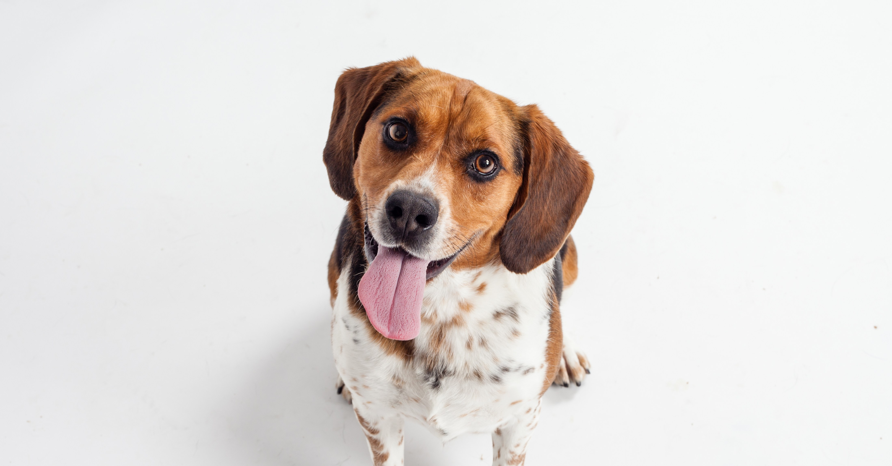

Hund eller tamhund er en rovdyrart i hundefamilien. Dens nærmeste viltlevende slektning er ulven. For omkring 50 000 år siden begynte ulver å leve sammen med menneskene og utviklet seg gradvis til den hunden vi kjenner i dag. Hunden var det første husdyret vårt, og er i dag den arten som viser størst variasjon i størrelse, farge, fasong og atferd. Det finnes hunder som i voksen alder veier under ett kilo og andre som veier over 100 kilo. Hunder kan ha en rekke forskjellige pelsformer. Enkelte raser er praktisk talt hårløse. Den store variasjonen henger sammen med at mennesket har drevet avl med hund, med sikte på å fremme sterkt varierende egenskaper, i atskillig lengre tid enn med noe annet husdyr. På 1800-tallet oppsto begrepet hunderaser og organisert raseavl med stambokføring, utstillinger og prøver. Dette førte til enda større variasjon blant hunder enn man hadde sett tidligere. I dag finnes det omkring 900 hundetyper og raser, mens det er registrert cirka 450 hunderaser, hvorav om lag 250 i Norge.Det er stor enighet om at hunden er en domestisert (temmet) ulv, og krysninger mellom dem gir fruktbart avkom. Hvordan ulv ble til hund finnes det flere teorier om, men hypotesen om selvdomestisering står sterkest. Denne går ut på at enkelte ulver levde av matrester og matsøppel rundt boplassene til menneskene. Ulver som var mer tamme enn andre og som turte å komme nærmere, fikk spist mer. Etter hvert bodde ulven tettere og tettere på mennesker og utviklet seg gradvis til hunden slik vi kjenner den i dag. Dette startet mest sannsynlig i Sørøst-Asia.

Den domestiserte hunden blir mindre enn villformen, den får mindre hode og ikke så kraftige kjever, og den viser større variasjon. Det eldste arkeologiske funnet av hund er omtrent 33 000 år gammelt og er gjort i Sibir. Ellers er de fleste andre funn gjort i Kina og Midtøsten. Genetiske studier viser at domestiseringen startet en god stund før vi kan se en forskjell i utseende mellom hund og ulv i arkeologiske funn. Det er uvisst akkurat når, men det kan ha vært for omkring 50 000 år siden. Hunden ble først brukt til mat og som pelsdyr, og til å varsle om farer som nærmet seg. Steinalderfunn viser at hundeknokler ble kløyvd slik at menneskene kunne spise margen. I noen kulturer spises ennå hundekjøtt. Oppgaver som gjeting av husdyrflokker og samarbeid på jakt krever større grad av tilpasning til mennesket enn de første tamhundene nådde. Så spesialiserte hunder som krigshunder (som deltok direkte i kamphandlingene) og trykkende, senere stående, fuglehunder oppstod ikke før i oldtidens europeiske kultursamfunn. Våre dagers høyt spesialiserte hunder som sanitetshunder, førerhunder, politihunder, lavinehunder og narkotikahunder er først kommet til på 1900-tallet. Likevel holdes de fleste hunder i dag som selskapsdyr. Hunder er sosiale og har gjennom evolusjonen utviklet seg til å foretrekke å være sammen med mennesker fremfor andre hunder. Ulven, hundens ville slektning, lever i monogame par i familiegrupper, akkurat som oss mennesker. Forvillede eller ferale hunder, altså hunder som lever fritt og ikke eies av mennesker, lever derimot hovedsakelig alene og ikke i organiserte flokker eller grupper. De lever av søppel og mat de finner eller får rundt oss mennesker. Det er stor valpedødelighet da tispa må oppfostre valpene alene, i motsetning til hos ulven hvor hannen deltar i valpeoppfostringen. Gjennom evolusjonen har hunden utviklet seg til å kunne kommunisere godt med oss mennesker, på en måte ingen andre arter kan. Hunder forstår intuitivt hva vi mener når vi peker, de følger med blikket vårt og de oppfatter vår sinnsstemning. Som følge av dette oppfatter vi mennesker at hunden er intelligent og vi knytter oss sterkt til hunden. Studier har vist at tilknytning mellom hund og eier ligner tilknytningen mellom mor og barn. Hunder kan vise separasjonsangst, glede ved gjenforening og preferanse for en person fremfor en annen på samme måte som barn gjør overfor mor. Valper gjennomgår en viktig periode for sosialisering og miljøtilvenning fra om lag tre uker til om lag 12 ukers alder. I denne perioden er det av stor betydning at valpen får rike og gode erfaringer med ulike mennesker og andre arter og får oppleve ulike miljø og hendelser slik at den er rustet til å mestre ulike situasjoner senere i livet. I denne sensitive perioden utvikler hjernen seg mye og blir formet av de erfaringene valpen gjør. En anbefaler at valpen får være hos tispa og kullsøsknene frem til cirka åtte ukers alder slik at den får lære å samhandle med egen art. I tillegg er det viktig at valpen får flytte tidsnok til ny eier slik at den lærer det nye miljøet å kjenne.Mens vi mennesker har tre typer fargefølsomme celler i øynene, har hunder bare to typer. Derfor kan hunder skjelne færre farger enn vi kan. Hunder kan oppfatte bevegelser bedre enn oss og kan se detaljer på noe som farer forbi, hvor vi kun ser et eller annet fare forbi. Skarpsynet hos hunder er ovalt og ikke en sirkel som hos oss mennesker. Fasongen på skarpsynsfeltet varierer mellom raser og ser ut til å ha en sammenheng med lengden på skallen og snuten. Synsfeltet hos hunder er i gjennomsnitt større enn hos mennesker, men varierer mellom raser på grunn av øynenes plassering. Raser med kort skalle og snute, slik som for eksempel bulldogg, har samme synsfelt som mennesker. Mynder har et betydelig større synsfelt.Hunden kan oppfatte frekvenser opp til 35 000 hertz, altså langt lysere lyder enn vi oppfatter. Hunden er god til å oppfatte hvor lyden kommer fra, men ikke så god som oss mennesker. LUKT Hunder kan registrere lukter som er så svake at bare noen få molekyler av duftstoffet når dem. Utformingen av snuten og måten hunden snuser på gjør at luften sirkulerer utenfor snuten, og luktmolekylene kommer inn i nesen. De er også i stand til å lokalisere retningen på et spor og hvilken retning lukten kommer fra da de lukter i «stereo». FEROMONER Feromoner er en type signalstoffer som bæres gjennom luften mellom individer av samme art. Hunder kommuniserer også gjennom feromoner for å identifisere individer og for å oppfatte hvor i brunstsyklusen tispen er, og de oppfatter feromoner som gjør dem rolige og trygge. Feromoner sanses ved hjelp av vomeronasalorganet som er lokalisert i ganen. SMAK Smakssansen hos hunder er lite undersøkt, men det er kjent at de ikke har noen preferanse for søtt slik vi har.
VÆRHÅR Hunder har værhår som oppfatter bevegelser i luften og berøring, noe som utfyller de andre sanseneHovedårsakene til at hunder utvikler atferdsproblemer er arvelige forhold, helseproblemer, skader og smerter, uheldige opplevelser og manglende erfaringer. De vanligste problemene hundeeiere søker råd for er aggresjon mellom hunder, aggresjon overfor fremmede mennesker, oppmerksomhetssøkende atferd, separasjonsangst og andre typer frykt. Rundt 25 prosent av hunder som blir avlivet, blir det på grunn av atferdsproblemer, og aggresjon er den største enkeltårsaken. Ved siden av at atferdsproblemer er belastende for hundeeieren, er det også et stort velferdsproblem for hunden selv, og det kan være plagsomt og skremmende for andre mennesker. Atferdsproblemer kan forebygges ved et godt avlsarbeid og ved å gi valpen rike og gode opplevelser tidlig i livet. Hundeeierens kompetanse er også viktig. Førstegangshundeeiere har oftere hunder med atferdsproblemer enn erfarne hundeeiere.